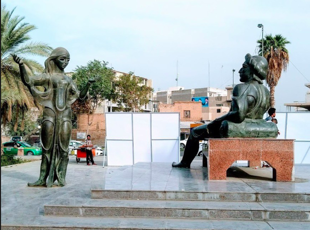

Shahryar as a Listener
Shahryar's main role in Arabian Nights is to listen - a student of both Scheherazade, morally, and Dunyazad, physically. He is blind and deaf because of his rage over his cheating wife, and Scheherazade, with Dunyadzad's help, awakes him. Walter Benjamin argues that stories differ from novels because the storyteller has an intrinsic connection with the listener, and the audience is thus more affected because of this personal connection. The "kinship" Benjamin speaks of in "The Storyteller" is already there between Scheherazade and Dunyazad. This is the importance of Dunyazad's role, that she guide the connection of Shahryar and Scheherazad through example.
"For storytelling is always the art of repeating stories, and this art is lost when the stories are no longer retained. It is lost because there is no more weaving and spinning to go on while they are being listened to. The more self-forgetful the listener is, the more deeply is what he listens to impressed upon his memory" (Benjamin, "The Storyteller").
"I will pray him to allow you to lie in the bride-chamber, that I may enjoy your company this one night more. If I obtain that favour, as I hope to do, remember to awake me to-morrow an hour before day, and to address me in these or some such words: 'My sister, if you be not asleep, I pray you that till day-break, which will be very shortly, you will relate to me one of the entertaining stories of which you have read so many.' I will immediately tell you one; and I hope by this means to deliver the city from the consternation it is under at present." Dinarzade answered that she would with pleasure act as she required her" (Scheherazade to Dunyazad in Galland's English Translation).
Through the act of storytelling, Scheherazade teaches Shahryar to learn to listen. And in doing so, she also teaches him to forget - forget his vow to never trust a woman - and to create a bond with her (the storyteller) so that he can change.
